Recomanacions de Praga per pijes
A continuació trobaràs les meves recomanacions personalitzades, de + a -
Imprescindibles
Pont Carles + Old town square + rellotge astronòmic + Cafè a Kavárna + plaça del davant (torre de la pólvora, etc.)
Passeig pels llocs més icònics de la ciutat. Tant el pont com l'ambient que tenia, em van encantar. Queda a prop de la plaça del centre, on a cada hora en punt el rellotge astronòmic fa un "show". Seguint recte s'arriba a la Torre de la pòlvora, que és força maco. Un cop allà, fes un cafè a Kavárna Obecní dům i gaudeix del lloc.
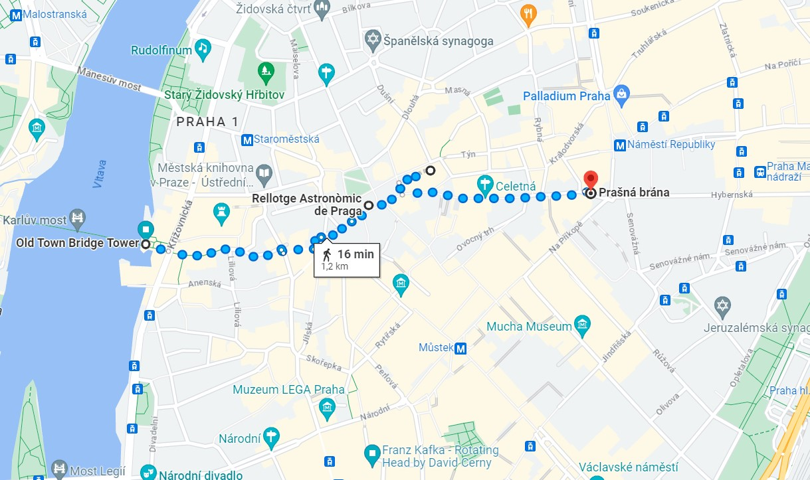Malastrana + Castell de Praga + catedral + Carril d’or
Agradable passeig del pont al castell pel barri de Malastrana. Veure el castell, la catedral i les casetes del Carril d’Or.
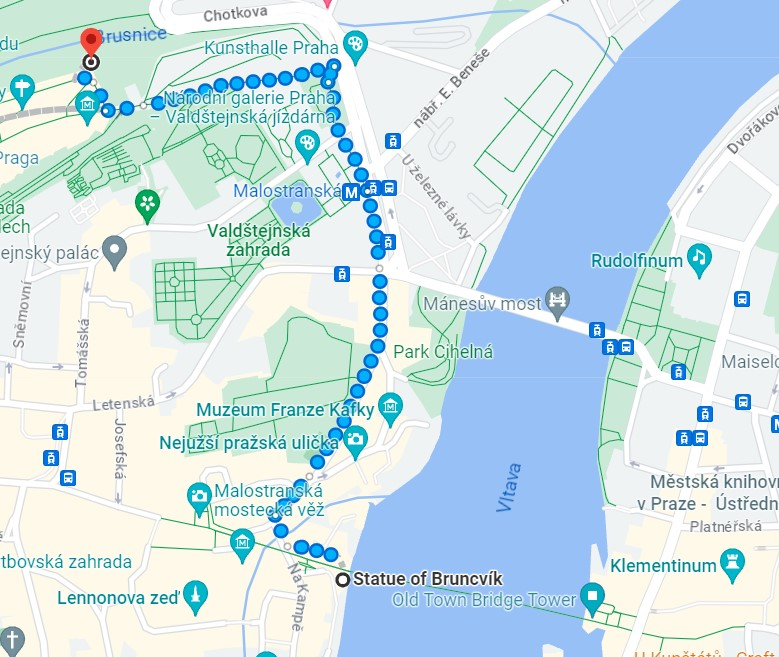Menjar un trolo (com a mínim)
La millor experiència gastronòmica que faràs en tot el viatge. És bo a tot arreu, però recomanable fer-lo perduda pels carrers del centre, a prop de la Old Town Square o aprofitant les vistes del turó de Malastrana.
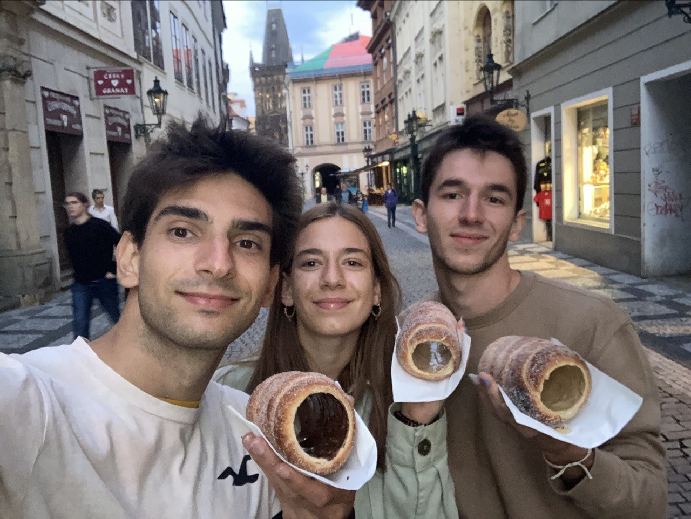Altament recomanables
Wenceslas Square + Botiga joguines Hamleys
Plaça + passeig bonics amb bon ambient. Caminar fins la botiga Hamleys. Hi ha una font amb els colors del barça i tot. Vaig flipar amb la botiga de joguines. És enorme i te un tobogan per baixar a la planta baixa. A veure si agafes idees per Reus😉
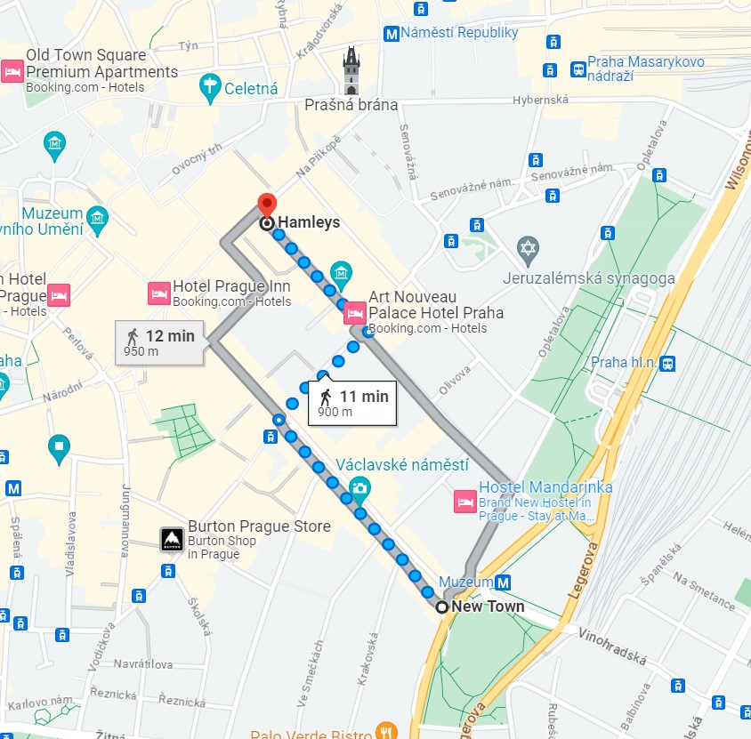 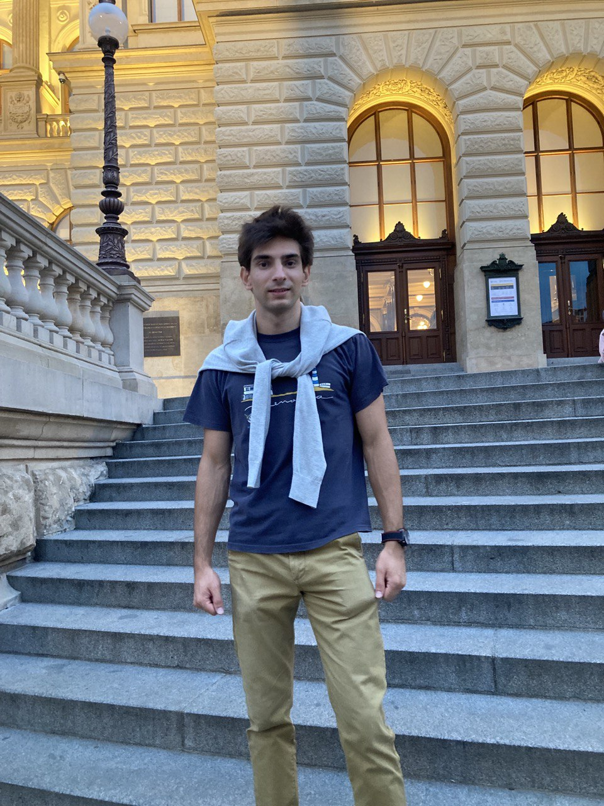 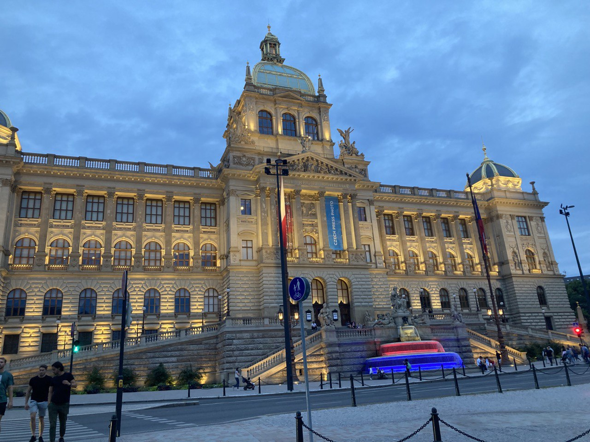 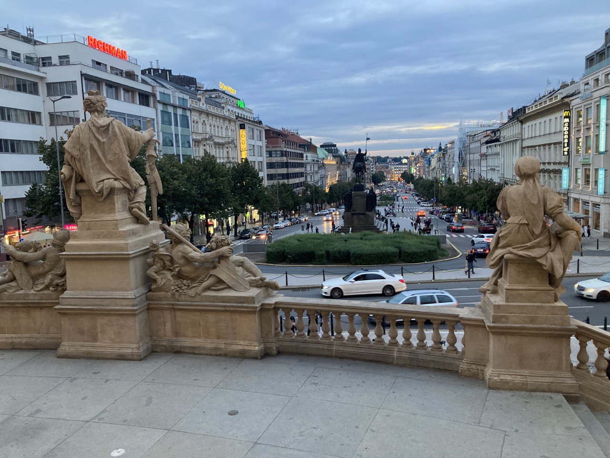 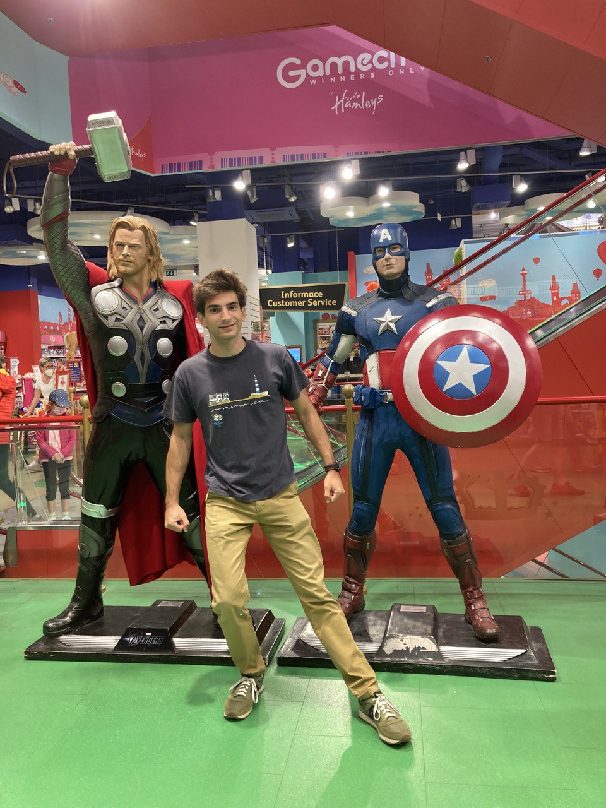 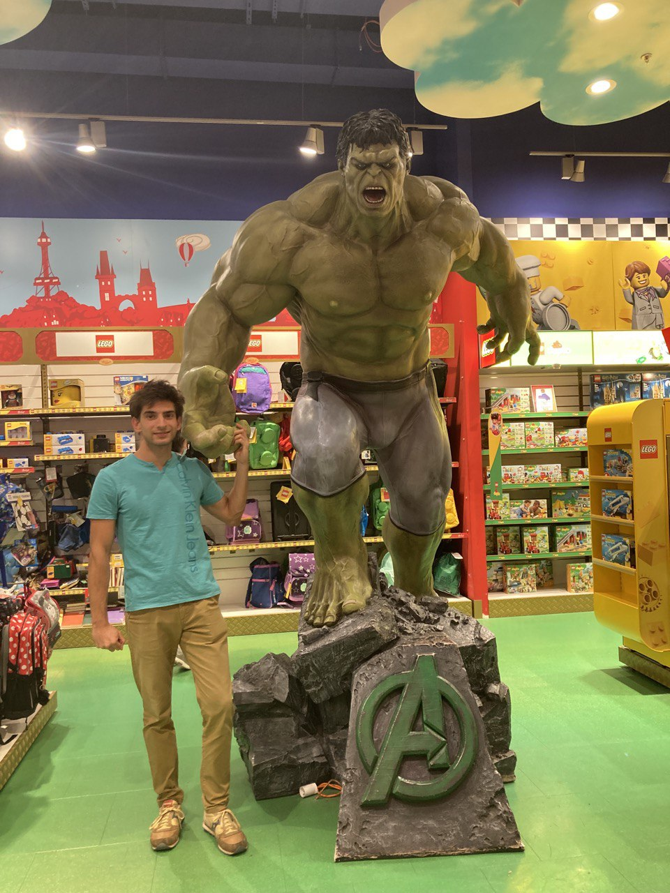 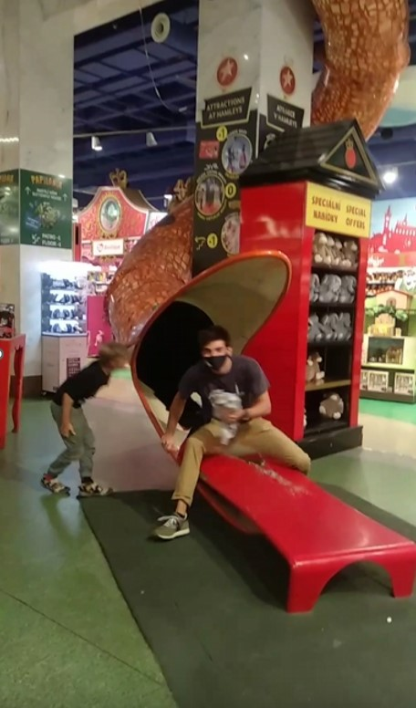Cara Kafka
T’ho poso aquí perquè és molt típic, està a 15 mins del pont. Deu ser l’escultura més famosa de David Cerny. És curiós veure com va girant i fa la forma de la cara. Però ningú s’ha mort, encara, per perdre-se-la.
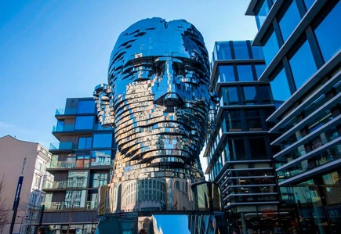Casa dansant
És molt guai i diferent a la resta d’edificis. Està a uns 20 mins a peu del pont. Et recomano anar-la a veure. Però si no tens temps, no passa res. Realment a la foto es veu el que és. Potser es pot entrar dins, però nosaltres no ho vam ni mirar.
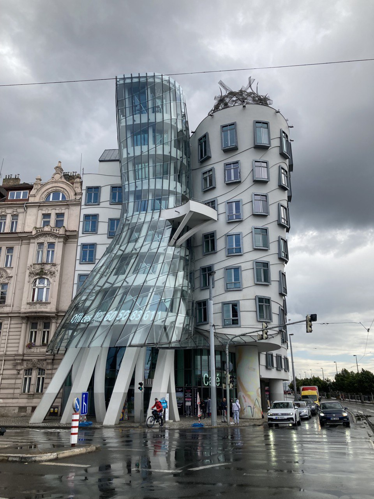Nye
Sinagogues + memorials + cementiri jueu
Realment és molt interessant i és un imprescindible de la cultura d’allà. Però tampoc és tant “bonic” de veure i t’ho recomanaria més quan facis un viatge per oci. Tot i que si estàs en el mood, interessant és la paraula.
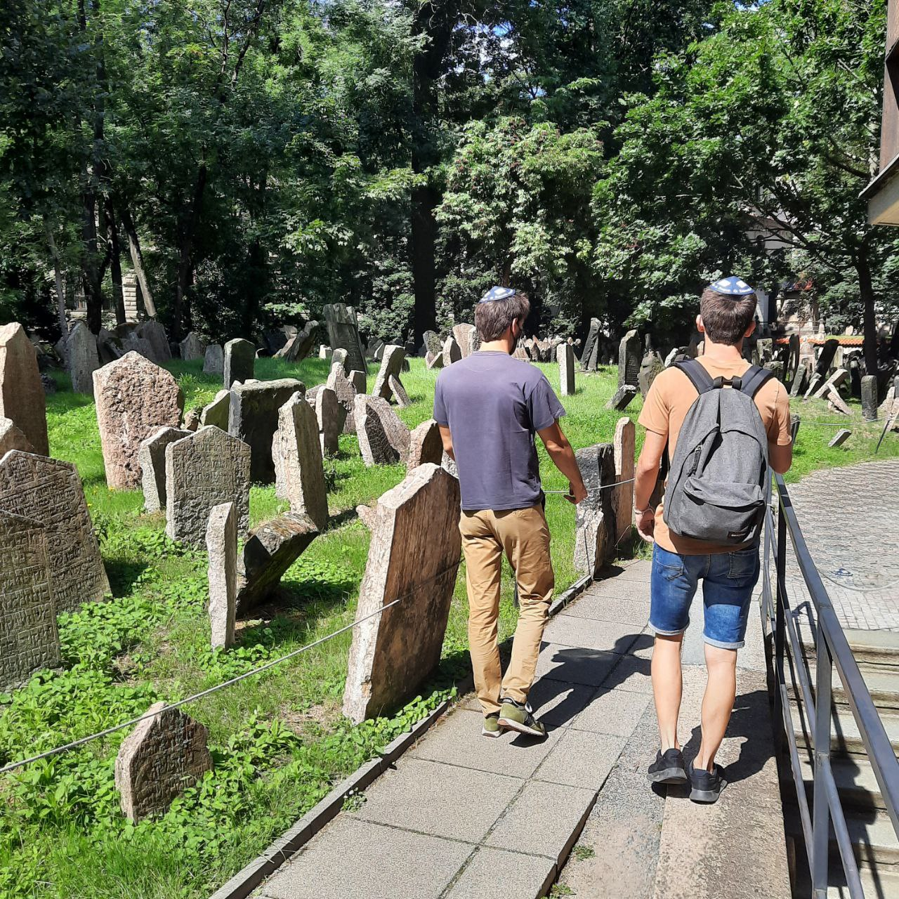Escultures de Cerny
N’hi ha varies i són guais de veure. Les reconeixeràs ràpid pel seu estil particular. El tema és que n’hi ha moltes de repartides per tota la ciutat i tampoc et recomano anar-les buscant com si fos això un escape room. La més famosa és la cara de Kafka, tot i que la dels tius pixant davant del museu, tampoc està malament.
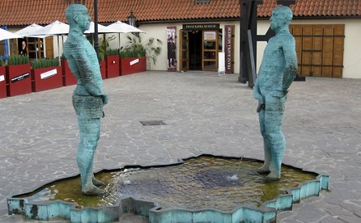 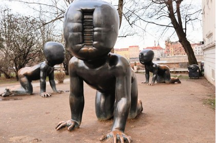Bonus Track
A la ciutat hi ha moltíssimes coses més per visitar. Els carrers del centre estan plens de coses boniques i llocs interessants: museus (Museu Nacional, Museu de Kafka, etc.), cases senyorials, llibreries antigues, ponts... Així conegut hi ha la Torre Eiffel fake i el Mercat Naplavka. No t’ho he posat perquè no ho vam veure; si vols, informa’t a veure si val la pena. Tot i que et semblarà de joguina aquesta torre comparat amb la que tenies allà.
Bon viatge!